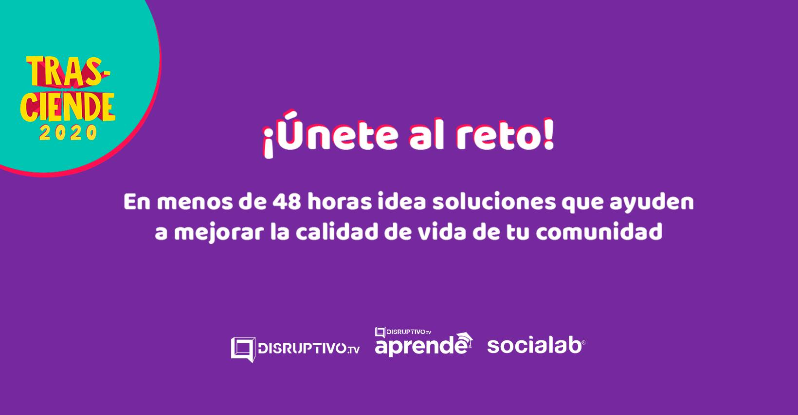

Este proyecto consistió en un café literario que realice en la escuela por motivo del
día del muertos donde realizamos distintas actividades tradicionales para el publico.

HACKATHON
Este fue un proyecto que debíamos escoger una problemática y hacer un reporte sobre
ella y crear una solución y así eligeran la mejor problemática con la mejor solucion
para poder llevarla a cabo.
OLIMPIADA DE AJEDREZ
En este proyecto tuve que prepararme demasiado para poder pasar las etapas de este torneo y gracias a la ayuda de un profesor se pudo lograr el objetivo de llegar al estatal de ajedrez que se llevó acabó en Morelia.